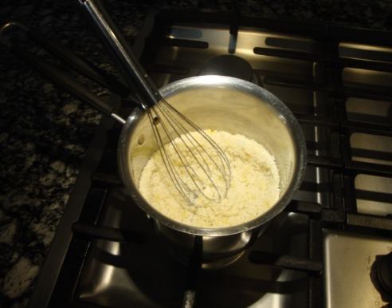
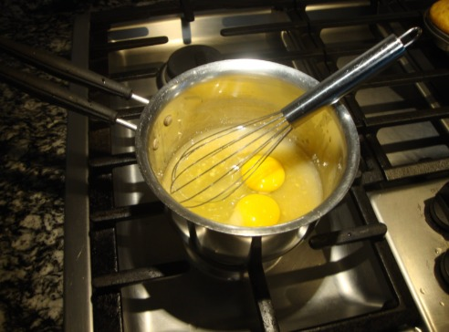
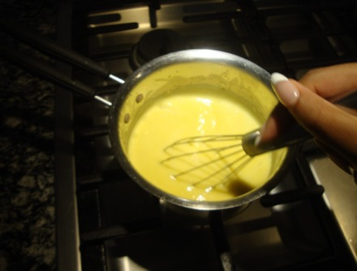
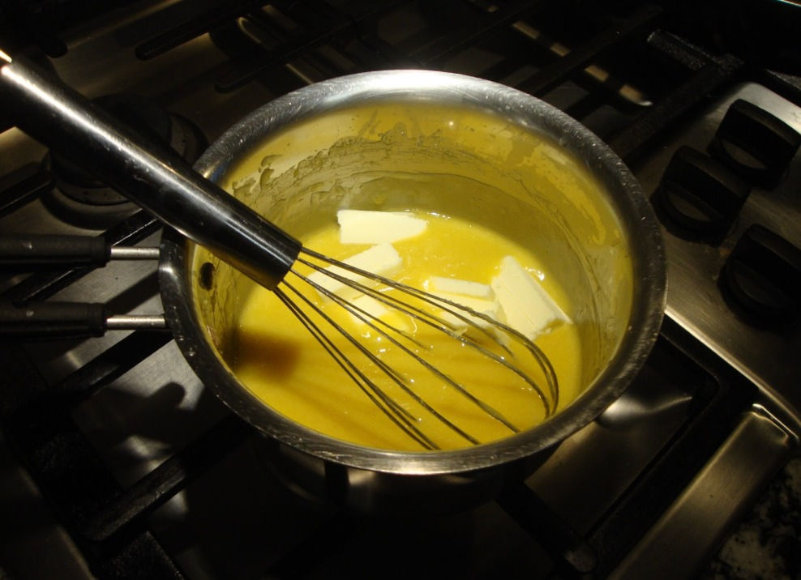
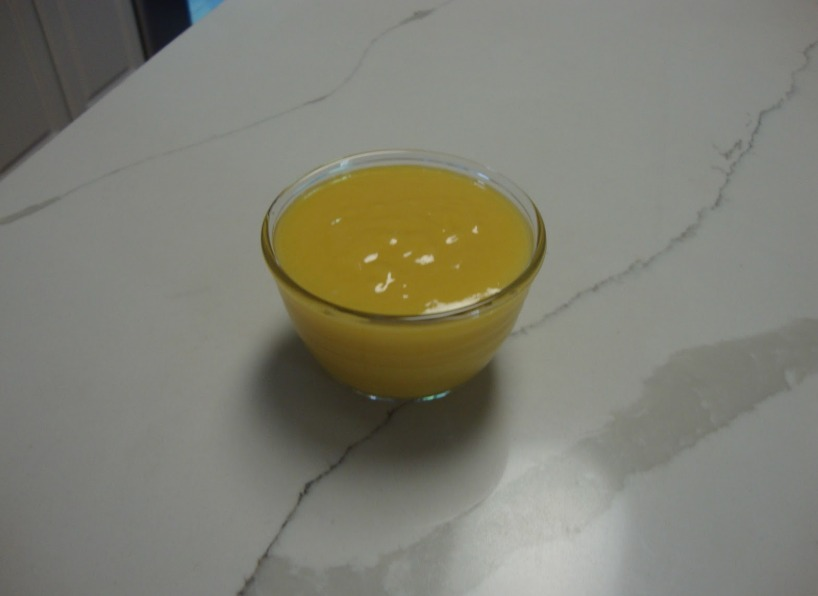
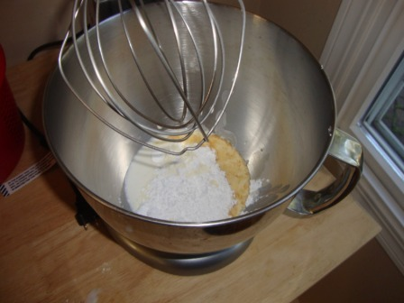
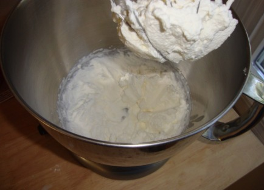
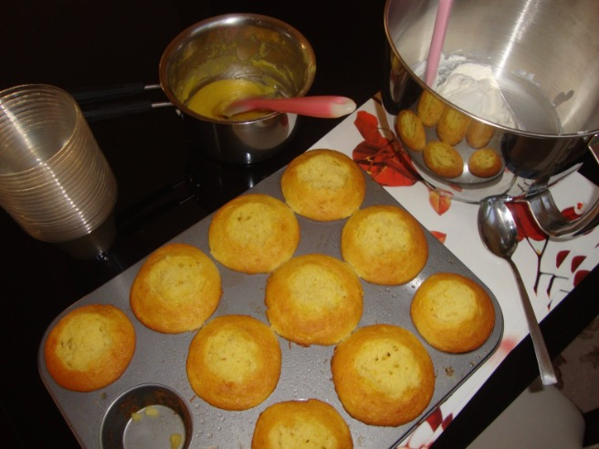
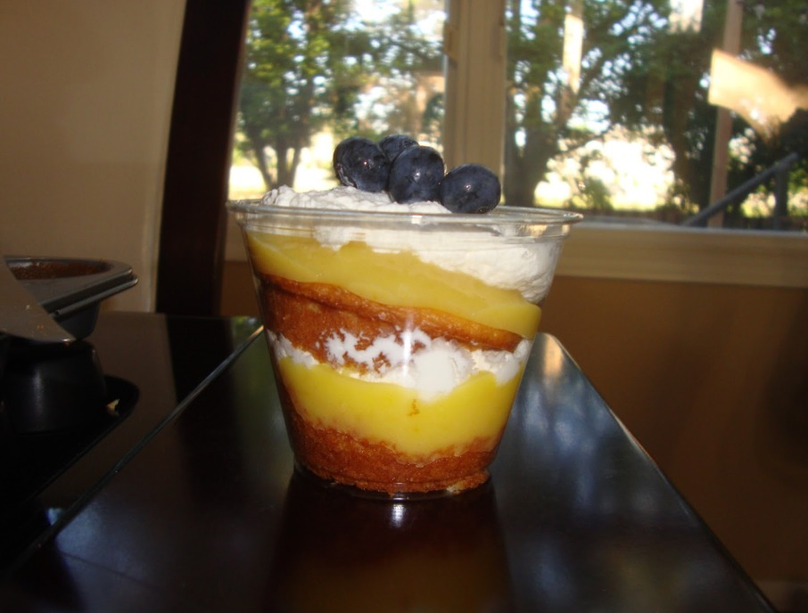

entry #2: lemon custard cake cups
07.07.25
Entry #2: Summer feels like the right time for all things bright: long days, fresh fruit, and desserts that do not weigh you down. Lemon has always been that flavor, tart, light, and just enough sweetness to keep things refreshing. These lemon custard cake cups feel like summer in dessert form. The yellow cake is soft and simple, the lemon curd adds that sunny zing, and the whipped cream makes it feel like a cloud. Perfect for backyard dinners, picnic baskets, or eating straight out of the fridge when it is too hot to think.
ingredients: serving size 3-4
- - one box of yellow cake mix (made into cupcakes)
- - 3/4 cup of white sugar
- - zest and juice of one lemon
- - two eggs
- - 1/2 cup of cold butter
- - 2 tsp vanilla extract
- - pinch of salt
- - 1 1/2 cups of heavy whipping cream
- - 2 tbsp of confectioner's sugar
recipe:
- Combine sugar, lemon zest and juice, and eggs in a saucepan and whisk constantly on medium-low heat.
- After the curd becomes thicker (5-10 min), add in sliced cold butter, vanilla extract, and salt.
- Allow curd to set for 1-12 hrs.
- To make the whipped cream, combine heavy whipping cream and powdered sugar in a bowl and beat until fluffy. Vanilla or almond extract can be added as well.
- After making the cupcakes, cut each into 2 or 3 pieces to assemble the cups.
- Layer the cake, lemon curd, whipped cream, and place whatever garnish you would like. Berries, sliced almonds, or lemon zest are all great options. Share and enjoy!
  


 

